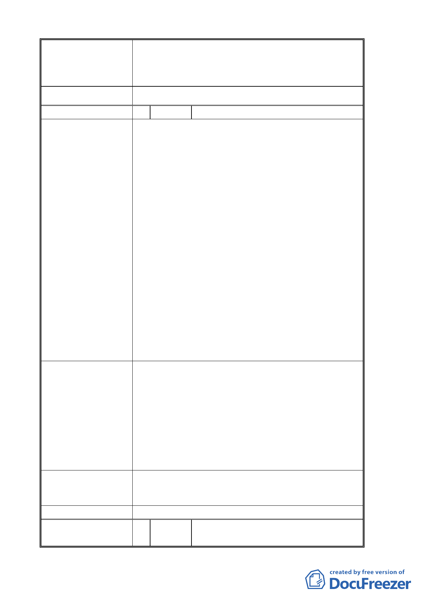

圍山坡地將維持現有自然狀態，不作開發與破壞，結合現
有老樹劃設生態景觀區，以開放式校園規劃，提供師生及
社區居民使用。
2. 陳情位置非本變更案範圍，不予處理。
委員會決議 依申請單位意見辦理。
編 號 6 陳情人 曾玲群
陳 情 理 由 為本市都市計畫「變更台北市文山區指南山莊機關用地為
大專用地（政治大學）及保護區主要計畫案」及「擬定台
北文山區指南山莊大專用地（政治大學）細部計畫案」提
出在地居民權益建議，謹請 貴會妥處，請查照。
一、 請政治大學（以下簡稱政大）評估其校地與鄰近
萬興國小等校地之比例與使用人數單位面積比
例，為何便民之地下停車場需至國小操場用地內
興建，而單放政治大學廣大校地不用，難道小學
生會比大學生更不會發生停車場出入口之危險
性？
二、 政大挾教育部之勢，未顧及周邊居民之需要，且
未釋出相關性別平等及友善措施，遑論對周邊居
民之權益，諸如體育館及游泳池之使用管制，甚
而假日非學生使用時段亦限制居民使用或需申
請及付費等單行法，諸不知所有公部門之財產均
屬中華民國，政大只不過是保管單位；另秀明路
二段之教職員停車場之興建（於萬壽華廈後
面），不僅將原本綠地覆蓋成混凝土之死地，且
未顧慮周圍居民之觀感，更不用說在台北市寸土
寸金的土地及都市之肺，即白白抺殺犧牲掉。
建 議 辦 法 一、 綜上，試想身為國民或各委員，能同意如此做法
及行徑再由政大為所欲為濫用國家土地及資源？
建請委員深切考量在地居民之需求，並請政大釋
出友善鄰里之作為，共創都市計畫實質發展及需
求。
二、 建請國防部將本次都市計畫變更範圍土地之價值
依市價估列，以利教育部補償相關款項至國防
部，或可促進文山區之財政，興建公有設施或修
補周邊道路(如萬壽路人行道等)回饋周邊居民。
申請單位回應意見 1. 指南山莊變更為大專用地後，將提供部分停車空間提供鄰
近居民使用。
2. 陳情位置非本變更案範圍，其意見由政治大學參酌辦理。
委員會決議 依申請單位意見辦理。
編 號 7 陳情人 臺北市議會李議員慶元 99 年 1 月 29
日書面質詢
- 12 -